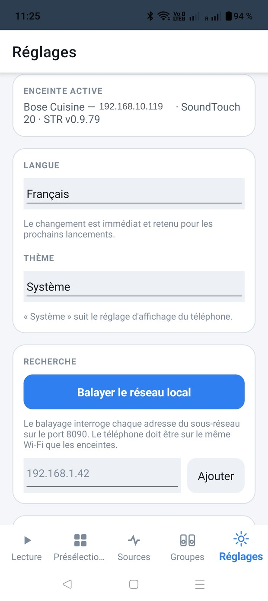
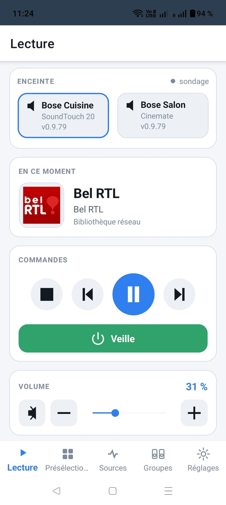
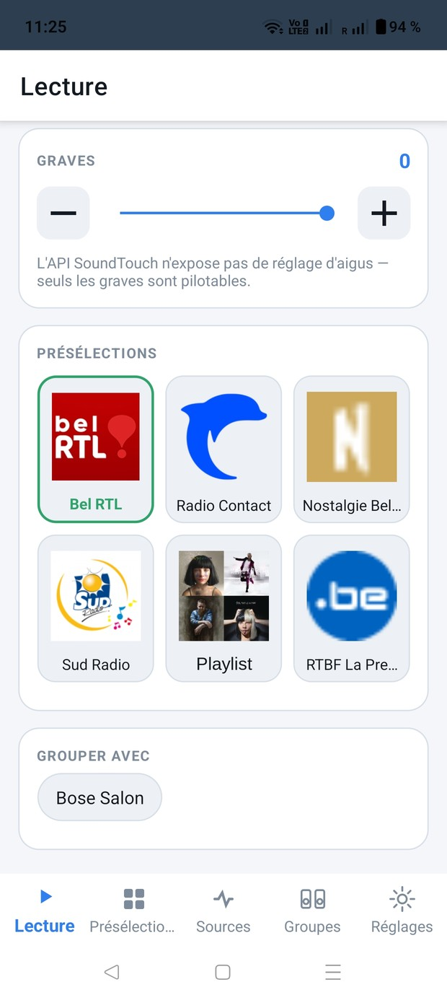
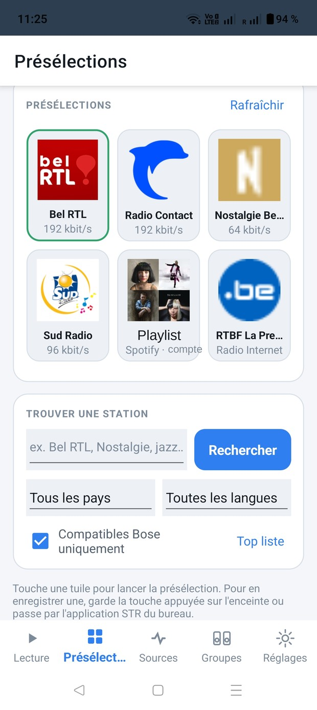
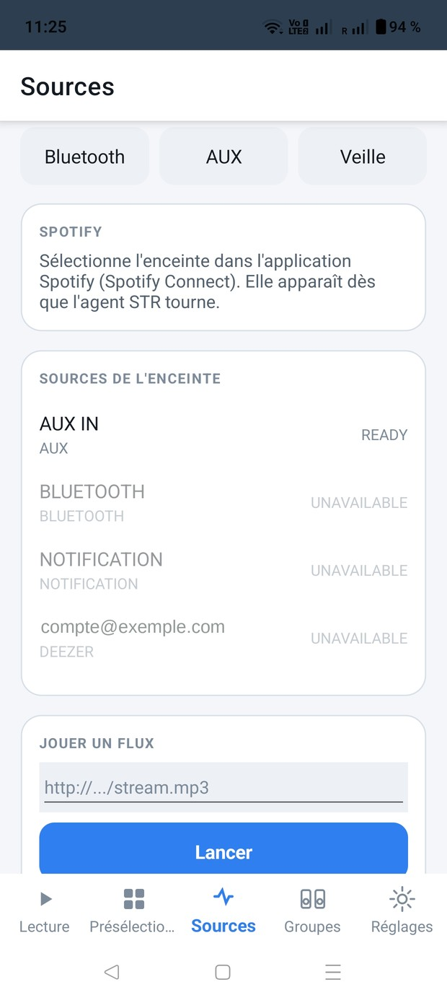
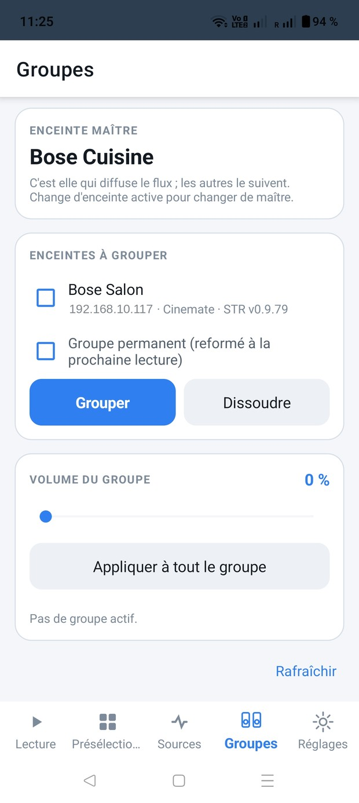
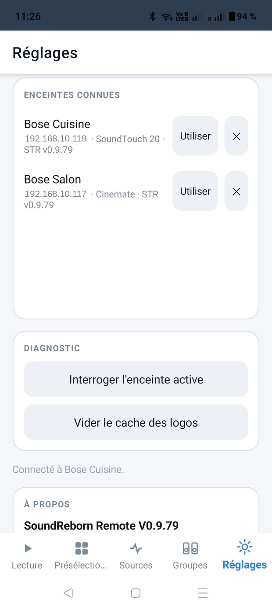

Versie 0.9.79 · Android 7 en hoger
SoundReborn Remote bedient Bose SoundTouch-speakers vanaf een Android-telefoon of -tablet. Alles gebeurt op je eigen netwerk: geen account, geen onlinedienst, geen gegevens die het huis verlaten.
Drie voorwaarden:
De app wordt niet via de Play Store verspreid. Je downloadt ze op de Releases-pagina van het project: https://github.com/ben240374/SoundRebornRemote/releases
.apk-bestand op de telefoon.Bij de eerste start wordt geen bijzondere toestemming gevraagd: de app raakt contacten, locatie noch opslag aan.
De app start in de taal van de telefoon als ze die kent — Frans, Engels, Duits, Nederlands, Spaans — en anders in het Engels. Je kunt dit altijd wijzigen.
Bij de eerste start is er nog geen speaker bekend. Ga naar Instellingen en dan Lokaal netwerk scannen.

De zoekactie verloopt in twee stappen. Eerst vraagt ze apparaten zich aan te melden (mDNS) — de snelle weg, twee tot drie seconden. Antwoordt niemand, dan bevraagt ze alle 254 adressen van het subnet één voor één op poort 8090: enkele seconden trager, maar het werkt ook waar multicast wordt gefilterd.
Gevonden speakers verschijnen onder BEKENDE SPEAKERS. Tik bij de gewenste op Gebruiken. Hij wordt onthouden: bij de volgende start verbindt de app zich er vanzelf weer mee.
Vindt de scan niets terwijl je het IP-adres van de speaker kent, typ het dan in het daarvoor bestemde veld en tik op Toevoegen.
Het hoofdscherm, dat je opent om snel iets te doen.

Bovenaan één kaart per bekende speaker, met model en versie van de STR-agent. De blauw omlijnde kaart is de bediende speaker; tik op een andere kaart om te wisselen, zonder langs de instellingen te gaan.
Het puntje rechts toont de verbinding: live betekent dat de speaker zijn wijzigingen meteen doorgeeft, peiling dat de app ze met tussenpozen opnieuw uitleest. Bij peiling duurt het een seconde of twee voor een wijziging van een andere afstandsbediening zichtbaar wordt.
De hoes, de titel en de bron van wat er speelt. Bij een radiozender diens logo en naam, bij Spotify de albumhoes.
Vier toetsen: stoppen, vorige, afspelen/pauzeren, volgende. Afhankelijk van de bron doen sommige niets — een live radiostream laat zich niet terugspoelen.
De groene balk Stand-by schakelt de speaker uit; is hij uit, dan staat er Inschakelen.
Dempen, min, schuifregelaar, plus. Het percentage staat rechts.
Zit de speaker in een groep, dan wordt deze regelaar het volume van de hele groep: verschuiven verplaatst alle speakers met hetzelfde bedrag, zodat de verhouding die je tussen hen hebt ingesteld bewaard blijft. De afzonderlijke volumes blijven bereikbaar in het tabblad Groepen.

De bass loopt van -10 tot +10, afhankelijk van het model. Een regeling voor hoge tonen is er niet: de API van de speaker biedt die niet — het is geen vergetelheid van de app.
De zes presets staan hier ook, om een tabbladwissel te besparen. De groen omlijnde tegel is degene die speelt.
Eén knopje per andere speaker. Tikken voegt die aan de groep toe; er verschijnt een vink. Nogmaals tikken haalt hem eruit. De bediende speaker is de master: hij zendt uit, de andere volgen.
De link Vernieuwen onderaan leest alles opnieuw: titel, hoes, volume, toestand van de groep.

Dezelfde als de fysieke toetsen op de speaker. Elke tegel toont het zenderlogo en de bitrate. Tikken start het afspelen; de groene omlijning markeert wat er speelt.
Logo's worden gedownload en daarna lokaal bewaard. Ontbreekt er een, dan publiceert de zender geen bruikbare afbeelding, of antwoordt zijn server niet.
Het zoekveld bevraagt radio-browser.info, een open gids die door vrijwilligers wordt bijgehouden. Twee keuzelijsten beperken de zoekactie tot een land en een taal, en Toplijst toont de meest beluisterde zenders zonder dat je iets typt.
Het vakje Alleen Bose-compatibel staat standaard aan en dat kun je beter zo laten: het filtert de formaten weg die SoundTouch-speakers niet kunnen decoderen (Ogg, Opus, FLAC) en die stilte zonder foutmelding zouden opleveren.
Tik op een resultaat en er opent een actieblad met
Toewijzen vereist de STR-agent. Zonder hem kun je alleen meteen luisteren; opslaan gebeurt dan door de toets op de speaker zelf ingedrukt te houden, of via de STR-desktopapp.

Bluetooth, AUX en Stand-by bovenaan: drie rechtstreekse snelkoppelingen.
Spotify wordt niet vanuit deze app bediend. Open Spotify op je telefoon en kies de speaker in de apparaatkiezer (Spotify Connect): hij verschijnt daar zodra de STR-agent draait.
Bronnen van de speaker toont wat de speaker opgeeft, met de toestand: READY betekent
beschikbaar, UNAVAILABLE dat de bron wel bestaat maar niet bruikbaar is — doorgaans een
streamingdienst waarvan het account sinds de cloud-afsluiting onbereikbaar is.
Een stream afspelen aanvaardt het adres van een rechtstreekse audiostream — een
.mp3 of een .m3u8 — en start die op de speaker. Handig voor een webradio die in de
gids ontbreekt. Hiervoor is de STR-agent nodig.
Onlangs afgespeeld toont de geschiedenis die de agent bijhoudt: tik op een regel om opnieuw te starten.

Masterspeaker geeft aan welke uitzendt. Wil je van master wisselen, wissel dan van actieve speaker in het tabblad Afspelen.
Te groeperen speakers: vink aan wie moet volgen, dan Groeperen. Ontbinden verbreekt de hele groep.
De optie Vaste groep vraagt de agent de groep bij het volgende afspelen opnieuw te vormen, in plaats van hem te laten wegvallen als de muziek stopt.
Groepsvolume werkt op alle speakers tegelijk. Onder die regelaar heeft elke speaker van de groep zijn eigen volume, zodat je de keuken zachter kunt zetten zonder de woonkamer aan te raken. Op hele groep toepassen zet iedereen op dezelfde waarde.
Eén gedrag is goed om te weten: de groepsregelaar verschuift de volumes met behoud van de onderlinge verschillen. Staat de keuken op 60 en de woonkamer op 30, dan geeft tien erbij 70 en 40 — niet 70 en 35.

Actieve speaker: naam, adres, model en versie van de agent.
Taal: Frans, Engels, Duits, Nederlands, Spaans. De wijziging is meteen van kracht, zonder herstart, en wordt onthouden.
Thema: Systeem, Licht of Donker. "Systeem" volgt de weergave-instelling van de telefoon, inclusief het automatisch omschakelen 's avonds.
Zoeken: de netwerkscan en het handmatig toevoegen via IP-adres.
Bekende speakers: de onthouden lijst. Gebruiken schakelt over, ✕ vergeet de speaker. Een speaker met de vermelding "Zonder STR — klaar voor installatie" antwoordt prima maar heeft geen agent; verderop verschijnt dan een uitlegblok met een link naar de site van het STR-project.
Diagnose: Actieve speaker bevragen toont wat de speaker werkelijk opgeeft — naam, model, apparaat-ID, firmwareversie, aanwezigheid van de agent, toestand van de meldingen, bassbereik, lijst van herkende API-eindpunten. Dat is de informatie die je bij een probleemmelding voegt. Logocache legen dwingt zenderafbeeldingen opnieuw te downloaden.
Over: de versie, de vermelding van het STR-project met een link naar zijn site in de gekozen taal, en de juridische vermeldingen.
Horizontaal vegen gaat naar het volgende of vorige tabblad: Afspelen → Presets → Bronnen → Groepen → Instellingen. Het gebaar moet vlot zijn; langzaam slepen wordt niet als tabbladwissel gelezen.
Een veeg die op een schuifregelaar begint, wordt door die regelaar opgevangen: dat is bewust, anders zou het volume niet meer in te stellen zijn. Begin het gebaar op een vrij stuk.
De scan vindt geen enkele speaker. Controleer of de telefoon op dezelfde wifi zit als de speakers, en niet op het gastnetwerk of op mobiele data. Sommige modems schermen apparaten van elkaar af — die instelling heet meestal AP-isolatie of clientmodus. Ken je het IP-adres, voer het dan handmatig in bij Instellingen.
De speaker verschijnt maar reageert nergens op. Waarschijnlijk staat hij in diepe slaapstand. Wek hem met de aan-uitknop op het tabblad Afspelen, of druk op een toets op de speaker zelf.
Een preset doet niets. Een lege toets heeft niets te starten. Kijk ook of de speaker niet uitstaat.
Er worden geen zenderlogo's getoond. Leeg de logocache bij de diagnose. Blijft het bij één bepaalde zender, dan ligt het aan diens eigen afbeeldingsserver.
Bij een speaker ontbreekt de agentversie. Ofwel is de agent er niet geïnstalleerd, ofwel is hij te oud om zijn versienummer te publiceren. Voer de scan opnieuw uit.
De groep komt niet tot stand. Beide speakers moeten aanstaan en bereikbaar zijn. Mist er één de STR-agent, dan verloopt het groeperen via de firmware: minder betrouwbaar, en soms zonder melding geweigerd.
De app staat in de verkeerde taal. Instellingen → Taal. Jouw keuze gaat voor op de taal van de telefoon.
SoundReborn Remote is een persoonlijk project onder MIT-licentie.
Het wordt niet geproduceerd of goedgekeurd door Bose Corporation. "Bose" en "SoundTouch" zijn merken van Bose Corporation, hier uitsluitend genoemd om de compatibiliteit aan te geven.
Het staat los van het STR-project: daardoor niet gebouwd, onderhouden of ondersteund. Problemen met deze app meld je in de eigen repository, niet bij het STR-project.
De agent STR (SoundTouch Reborn) is het werk van Jens Roggenfelder (JRpersonal) — https://st-reborn.de. Zonder hem zou deze app niets te besturen hebben.
De zendergids komt van radio-browser.info.
De code is geschreven met Claude (Anthropic).